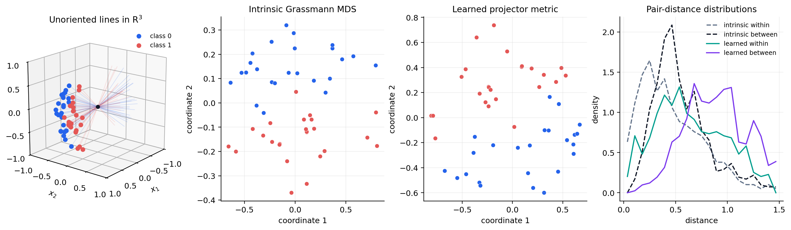

Supervised metric learning on the Grassmann manifold#
An intrinsic distance is fixed by a geometry, but a supervised task may value embedded directions differently. Riemannian manifold metric learning (RMML) starts from an equivariant embedding \(\phi(x)\) and learns a positive-definite matrix \(A\) so that
We use the manifold \(\operatorname{Gr}(1,3)\) of unoriented lines in \(\mathbb R^3\). A point is represented publicly by a unit frame \(X\in\mathbb R^{3\times1}\), but \(X\) and \(-X\) describe the same line. The projection embedding removes this ambiguity:
GrassmannProjection supplies this embedding, while its intrinsic operations
use principal-angle geometry [Edelman et al., 1998]. GeoJAX learns the
regularized closed-form RMML metric of Zhu et al. [2018] in the
nine-dimensional projector coordinates.
from pathlib import Path
import jax
jax.config.update("jax_enable_x64", True)
import jax.numpy as jnp
import matplotlib.pyplot as plt
import numpy as np
from geojax.geometry import GrassmannProjection
from geojax.learning import (
classical_mds,
pairwise_distances,
riemannian_metric_learning,
)
plt.rcParams.update({
"figure.dpi": 220,
"savefig.dpi": 320,
"font.size": 10,
"axes.titlesize": 11,
"axes.spines.top": False,
"axes.spines.right": False,
})
M = GrassmannProjection(size=(3, 1))
keys = jax.random.split(jax.random.key(510), 6)
n_per_class = 24
def make_class(sign, key_offset):
signal = sign * 0.16 + 0.10 * jax.random.normal(
keys[key_offset], shape=(n_per_class,)
)
nuisance = 0.40 * jax.random.normal(
keys[key_offset + 1], shape=(n_per_class,)
)
baseline = 1.0 + 0.04 * jax.random.normal(
keys[key_offset + 2], shape=(n_per_class,)
)
ambient = jnp.stack([baseline, signal, nuisance], axis=-1)
unit_vectors = ambient / jnp.linalg.norm(ambient, axis=1, keepdims=True)
return unit_vectors[..., None]
x0 = make_class(-1.0, 0)
x1 = make_class(1.0, 3)
points = jnp.concatenate([x0, x1], axis=0)
labels = jnp.concatenate([
jnp.zeros(n_per_class, dtype=int),
jnp.ones(n_per_class, dtype=int),
])
model = riemannian_metric_learning(
M,
points,
labels,
regularization=0.05,
balance=0.5,
)
intrinsic_distances = pairwise_distances(M, points)
learned_distances = model.pairwise_distances(points)
def leave_one_out_accuracy(distances):
masked = distances.at[jnp.diag_indices(len(points))].set(jnp.inf)
neighbor = jnp.argmin(masked, axis=1)
return jnp.mean(labels[neighbor] == labels)
baseline_accuracy = leave_one_out_accuracy(intrinsic_distances)
learned_accuracy = leave_one_out_accuracy(learned_distances)
print("metric shape:", model.metric.shape)
print("metric eigenvalues:", np.round(np.linalg.eigvalsh(np.asarray(model.metric)), 4))
print(f"intrinsic 1-NN accuracy: {float(baseline_accuracy):.3f}")
print(f"learned 1-NN accuracy: {float(learned_accuracy):.3f}")
print("similar pairs:", model.diagnostics["similar_pairs"])
print("dissimilar pairs:", model.diagnostics["dissimilar_pairs"])
metric shape: (9, 9)
metric eigenvalues: [1. 1. 1. 1. 1. 1. 1.0011 1.0041 2.5633]
intrinsic 1-NN accuracy: 0.896
learned 1-NN accuracy: 0.979
similar pairs: 552
dissimilar pairs: 576
Leave-one-out nearest-neighbor accuracy is only an interpretable diagnostic. It is evaluated on the labeled observations used to learn \(A\), so it is not an estimate of generalization performance.
Compare intrinsic and learned representations#
Classical MDS visualizes the intrinsic principal-angle distances. For the
learned metric, model.transform applies a square root of \(A\) to vectorized
projectors; we center those coordinates and retain their leading two singular
directions for display.
intrinsic_embedding = classical_mds(M, points, n_components=2)
transformed = model.transform(points)
centered = transformed - jnp.mean(transformed, axis=0, keepdims=True)
left_vectors, singular_values, _ = jnp.linalg.svd(centered, full_matrices=False)
learned_embedding = left_vectors[:, :2] * singular_values[:2]
same_class = labels[:, None] == labels[None, :]
upper = jnp.triu(jnp.ones((len(points), len(points)), dtype=bool), k=1)
within_mask = upper & same_class
between_mask = upper & ~same_class
distance_sets = {
"intrinsic within": np.asarray(intrinsic_distances[within_mask]),
"intrinsic between": np.asarray(intrinsic_distances[between_mask]),
"learned within": np.asarray(learned_distances[within_mask]),
"learned between": np.asarray(learned_distances[between_mask]),
}
Visual report#
The first panel draws each Grassmann point as a line through the origin. A dot marks one chosen hemisphere representative only to make the display readable; the fitted model sees the sign-invariant projector. The broad vertical nuisance variation obscures the class signal under the intrinsic metric. RMML reweights projector directions without changing any manifold observation.
fig = plt.figure(figsize=(14.0, 4.0), constrained_layout=True)
colors = np.array(["#2563EB", "#E45756"])
axis3d = fig.add_subplot(1, 4, 1, projection="3d")
representatives = np.asarray(points[..., 0])
representatives = np.where(
representatives[:, :1] < 0.0, -representatives, representatives
)
for label in (0, 1):
selected = np.asarray(labels == label)
for vector in representatives[selected]:
axis3d.plot(
[-vector[0], vector[0]],
[-vector[1], vector[1]],
[-vector[2], vector[2]],
color=colors[label], alpha=0.14, linewidth=0.9,
)
axis3d.scatter(
*representatives[selected].T,
color=colors[label], s=25, depthshade=False, label=f"class {label}",
)
axis3d.scatter([0.0], [0.0], [0.0], color="#111827", s=18)
axis3d.set(
title=r"Unoriented lines in $\mathrm{R}^3$",
xlabel="$x_1$",
ylabel="$x_2$",
zlabel="$x_3$",
xlim=(-1.0, 1.0),
ylim=(-1.0, 1.0),
zlim=(-1.0, 1.0),
)
axis3d.set_box_aspect((1, 1, 1))
axis3d.view_init(elev=18, azim=38)
axis3d.legend(frameon=False, fontsize=8)
for position, coordinates, title in (
(2, intrinsic_embedding.coordinates, "Intrinsic Grassmann MDS"),
(3, learned_embedding, "Learned projector metric"),
):
axis = fig.add_subplot(1, 4, position)
coordinates = np.asarray(coordinates)
for label in (0, 1):
selected = np.asarray(labels == label)
axis.scatter(
coordinates[selected, 0], coordinates[selected, 1],
color=colors[label], s=30, edgecolor="white", linewidth=0.35,
)
axis.set(title=title, xlabel="coordinate 1", ylabel="coordinate 2")
axis.grid(alpha=0.18)
distribution_axis = fig.add_subplot(1, 4, 4)
bins = np.linspace(
0.0,
max(np.max(values) for values in distance_sets.values()),
22,
)
styles = {
"intrinsic within": ("#64748B", "--"),
"intrinsic between": ("#111827", "--"),
"learned within": ("#009E8E", "-"),
"learned between": ("#7C3AED", "-"),
}
for name, values in distance_sets.items():
color, linestyle = styles[name]
histogram, edges = np.histogram(values, bins=bins, density=True)
centers = 0.5 * (edges[:-1] + edges[1:])
distribution_axis.plot(
centers, histogram, color=color, linestyle=linestyle, label=name,
)
distribution_axis.set(
title="Pair-distance distributions", xlabel="distance", ylabel="density",
)
distribution_axis.grid(alpha=0.18)
distribution_axis.legend(frameon=False, fontsize=8)
output = next(
path for path in (
Path("../_static/tutorials/grassmann-metric-learning.png"),
Path("docs/_static/tutorials/grassmann-metric-learning.png"),
Path("_static/tutorials/grassmann-metric-learning.png"),
)
if path.parent.exists()
)
output.parent.mkdir(parents=True, exist_ok=True)
fig.savefig(output, bbox_inches="tight")
plt.show()

RMML needs an equivariant embedding, not merely a distance function. Here the
projector map is canonical and preserves the Grassmann quotient. When a
geometry does not provide such a map, riemannian_metric_learning requires an
explicit embedding callable; supplying an arbitrary coordinate chart would
change the invariance of the learned comparison.
References#
Alan Edelman, Tomás A. Arias, and Steven T. Smith. The geometry of algorithms with orthogonality constraints. SIAM Journal on Matrix Analysis and Applications, 20(2):303–353, 1998. doi:10.1137/S0895479895290954.
Pengfei Zhu, Hao Cheng, Qinghua Hu, Qilong Wang, and Changqing Zhang. Towards generalized and efficient metric learning on Riemannian manifold. In Proceedings of the Twenty-Seventh International Joint Conference on Artificial Intelligence, 3235–3241. 2018. doi:10.24963/ijcai.2018/449.